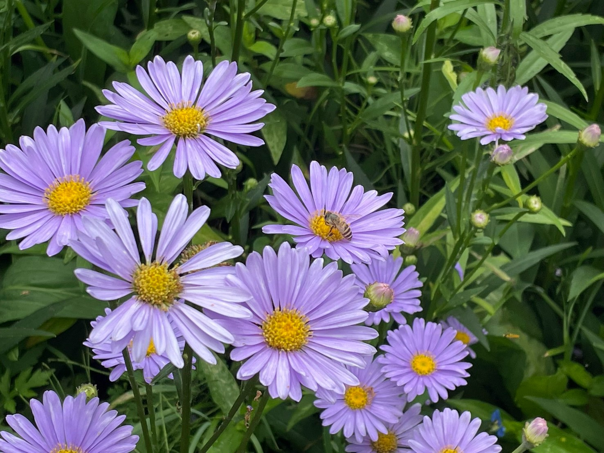
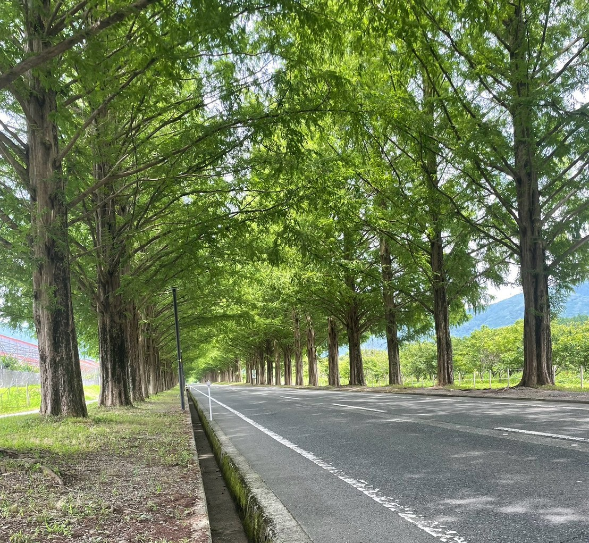
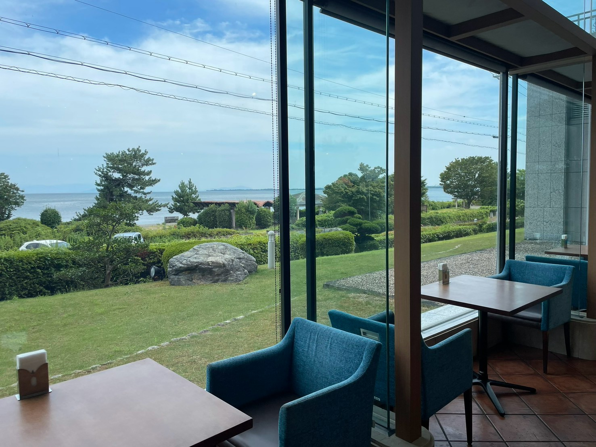

京都市内は最高気温38.2℃に達する猛烈な暑さ。そんな中、「かつては日本一暑いと言われたところからやって来たんです」とドライバーの案内を交えながら、今回のツアーがスタートしました。
今回ツアーを担当したのは、MKのハイヤー所属・宮島ドライバー。指名でのお仕事も度々いただく、人気のドライバーです。
まず最初の目的地は、京都市左京区久多地域にある「北山友禅菊」。途中、「里の駅 大原」で休憩を挟みながら、約1時間半の道のりを、ドライバーの道中案内を楽しみつつハイエースで進みます。
いざ北山友禅菊に到着すると、まさに満開を迎えた友禅菊が一面に咲き誇っていました。淡い紫色の花々と青空が織りなす景色はとても美しく、思わず見入ってしまうほどです。
ゆっくりと見学を楽しんだ後は、「道の駅 くつき新本陣」で休憩を挟み、次の目的地である「メタセコイア並木」へ向かいます。
紅葉シーズンには多くの人で賑わうことで知られるメタセコイア並木ですが、今回はまだ葉が色づく時期ではないにもかかわらず、訪れるお客様が絶えず、周辺の施設も賑わいを見せていました。
その後、今津サンブリッジホテルには13:00頃、ほぼ予定通りに到着。お待ちかねの昼食をいただきました。
サラダやおかずはビュッフェ形式で、天ぷらのほか、自分で作る冷麺やデザートなども用意されており、かなり充実した内容です。お客様同士の会話も自然と弾み、皆様で楽しいひとときを過ごしながら、約1時間半の昼食をゆったりと楽しみました。
ツアーの最後は「道の駅 妹子の郷」に立ち寄り、京都駅へと戻ります。
お別れの際にも、宮島ドライバーは最後までドアサービスを欠かすことなく、お客様を笑顔でお見送り。ツアーの始まりから最後まで、笑顔の絶えない時間となりました。
アンケートでは、「ドライバーのファンになりました」という嬉しいお声もいただいております。
今回のツアーを通して、お客様にとって思い出に残る一日をお届けできたことを、スタッフ一同大変嬉しく思います。
またどこかのツアーで皆様にお会いできることを願いながら、これからも多くの素敵なツアーをご案内できるよう、スタッフ一同努めてまいります！


